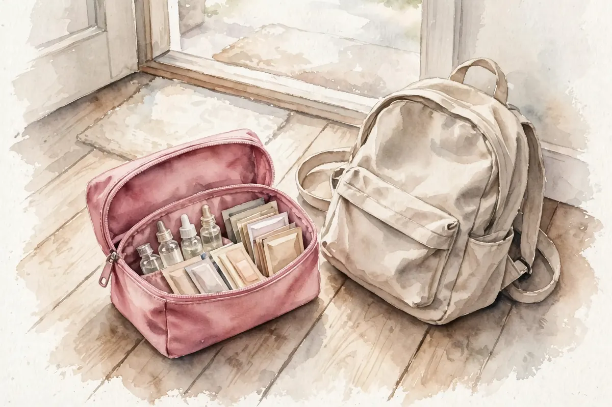

トップ ＞ スキンケア ＞ 非常用ポーチに入れる最小のスキンケア
非常用ポーチに入れる最小のスキンケア

災害時や急な外泊など、いつもの洗面所が使えない場面では、最低限のケア用品が手元にあるかどうかで過ごし方が変わります。大きなセットは要りません。この記事では、非常用ポーチに入れる「最小のスキンケア」の組み方を整理します。
優先順位は「洗う・保湿・守る」
最小セットの考え方は、いつもの手順を圧縮することです。優先順位の最初は、顔の汚れを落とすもの。次に、水分と油分を補う保湿のもの。季節によっては、日中のための日焼け止めが入ります。この3つの役割がそろえば、数日間は最小限のケアが成立します。
個包装の使い切りタイプは、軽くて保管しやすい形態です。シートタイプの拭き取り用品は、水が使えない場面での応急として役立ちます。普段使っているものの中から、使い慣れたものを選ぶことが、非常時には安心材料になります。初めてのものを非常用に選ぶのは避けたほうが無難です。
小分けにするときの注意
普段のアイテムを小分け容器に移す場合は、中身の名前と移した日付を必ず書いてください。非常時にこそ、混同は避けたいものです。小分けしたものは劣化の面でも、本体のままのものより早めの交換が前提になります。
ポーチ全体の点検は、季節の変わり目など、決まったタイミングで行うと忘れません。日焼け止めは夏向きの構成に、保湿は冬向きに厚くする、といった入れ替えもこのタイミングで行います。防災用品の点検と一緒の日にするのも、習慣化のコツです。
置き場所は「持ち出せる場所」に
非常用ポーチは、防災リュックの中か、玄関近くの決まった場所に置きます。洗面所の奥にしまい込むと、いざというときに取り出せません。家族それぞれのポーチにするか、共有の1つにするかは、家庭の形に合わせて決めてください。
最小セットは、日常のケアの縮図です。何を残すかを考えることは、自分のケアの優先順位を見直す機会にもなります。備えは、平常時の見直しから生まれます。
外泊用の簡易セットにも、同じ考え方
非常用ほどの備えでなくても、急な外泊や出張に使える簡易セットを持っておくと便利です。組み方は非常用と同じで、落とす・保湿・守るの3役を小さくまとめるだけです。普段の旅行用ポーチと兼用にしておくと、管理する場所が1つで済みます。
簡易セットは、使う機会が少ないぶん、中身の鮮度管理が大切です。点検の日を決め、開封日の古いものは日常使いに回して、新しいものと入れ替えます。備えは、置いて終わりではなく、回して維持するものです。その回転が、いざというときの安心を保ちます。
ポーチの中身は、家族構成によっても変わります。小さな子どもがいる家庭では、子どものケア用品も最小セットに加わります。その場合も、役割ごとに分けて入れる考え方は同じです。大人のものと子どものものは、袋を分けて見分けられるようにしておくと、慌ただしい場面でも取り違えません。
備えの見直しは、家族の成長や引っ越しなどの節目にも行ってください。生活が変われば、最小の形も変わります。備えとは、一度作って終わるものではなく、生活に合わせて更新し続けるものです。その更新の手間こそが、備えの本体なのです。
非常用ポーチの考え方は、入院や介護など、生活の場面が変わるときにも応用できます。いつもの洗面所が使えない状況は、災害だけではありません。最小セットの組み方を知っていることは、さまざまな場面での備えになります。
ポーチを作るときは、家族と「どこに置くか」を共有してください。置き場所を知っている人が複数いることが、備えの実効性を上げます。備えは、個人の習慣であると同時に、家庭の情報共有でもあります。
最小のセットを考える時間は、自分のケアの棚卸しの時間でもあります。年に数回の点検を、ケア全体の見直しの機会として使ってください。
セラフィナ「最小のセットは、いざというときの安心だね。点検の日も決めておこう」

セラフィナ｜美容の道具箱の案内役
「量と表示が分かれば、美容は失敗しない。」——セラフィナと白猫のモコが、買う前のチェックポイントを案内します。綺麗になりたい気持ちに正直に、でも表示は冷静に読むのが、このサイトの約束です。